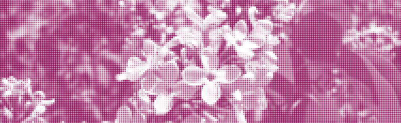

Elke dinsdag samen eten, voor €2,50. Vanaf 18:30 is iedereen welkom, de keuken is open tot 20:00. Het eten is veganistisch.
In Amsterdam-Oost (Watergraafsmeer), zo'n 7 minuten fietsen vanaf Science Park en Roeterseiland. Stuur een mailtje voor de locatie.
De Sering is een initiatief van de Coalitie, en is voor iedereen, ongeacht politieke interesses. We hebben het opgezet omdat we vinden dat er meer plaatsen op de universiteit moeten zijn waar studenten ongedwongen kunnen samenkomen. En waar er goedkoop en goed eten is.
De studentenkantine is geen politieke bijeenkomst, maar wel in lijn met de gedachte van de Coalitie: de Coalitie zet zich in voor meer verbondenheid en betrokkenheid van en door studenten. Samen eten is daar een invulling van.
